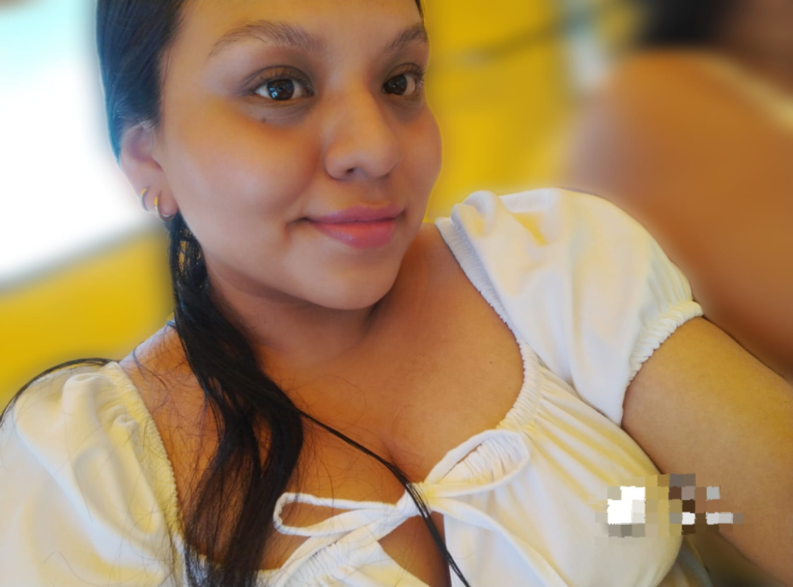

Dale play:

Primero que nada, Hola...
La verdad no sé si está bien esto que estoy haciendo jaja, pero que puedo hacer?, me nació hacerlo y pues aquí estoy escribiendo esto a las 11 de la noche del día 27 jaja. Cuando falta menos de una hora para lo que se supone iba a ser nuestro cuarto mes, y ni siquiera sé si leerás esto, o si lo haces, tal vez ya no signifique nada, pero bueno, lo hago desde lo más profundo de mi corazón ^^.
Sé que nada de lo que paso fue tu culpa, al final como vimos, fui un inmaduro, no me comporte a la altura y aquí estoy escribiendo algo que ni siquiera sé si leerás.
Solo decirte que Feliz Cuarto Mes, que aun así no estemos juntos, fuiste, eres y serás siempre la mujer más importante en mi vida. Solo han pasado días desde que nos alejamos y como dijiste, creo que será definitivo, pero aquí estoy yo insistiendo con algo que tal vez ya ni tenga importancia, tal vez ya borraste nuestro chat y no podras leer esto, porque de seguro solo lo verás fijado y no podras entrar al link jaja.
Pero bueno, como dije, solo han pasado días desde que nos separamos y pues, el amor no se va porque si de la noche a la mañana, y a pesar de todas las cosas que no dijimos, eso no quita que mi coléra o mi tristeza pueda más que el amor que aún te tengo y siempre te tendré.
Tal vez me tengas bloqueado, me volviste a eliminar de todo jaja, y solo..., aún duele, y dejáme decirte que duele bastante, porque te amo con todo mi ser, y he estado llorando a más no poder, me estoy volviendo a descuidar, estoy cominedo mucho jaja. Como me dijiste esa vez, que te dolía que no te cuente mis cosas o que pasaba en mi día a día, pues dejáme decirte que estoy volviendo a comer mucho, no estoy durmiendo temprano, tengo ojeras, estoy sin ganas de nada, me sigo sintiendo mal con lo que te conte, aún sigo llorando todas las noches y bueno, muchas cosas más que no quiero decir por qué sé que tal vez ya ni importan.
También decirte que aunque estemos alejados, siempre puedes contar conmigo para lo que sea, cuando quieras escribirme, si algún día, que aunque no lo creo, me extrañas puedes escribirme sin ningún problema, siempre estare para ti ^^.
Y terminar diciendo que:
Te quiero
Te extraño
Aún te deseo y mucho JAJAJA
Y no sé si está bien esto, pero:
Te amo ❤️.